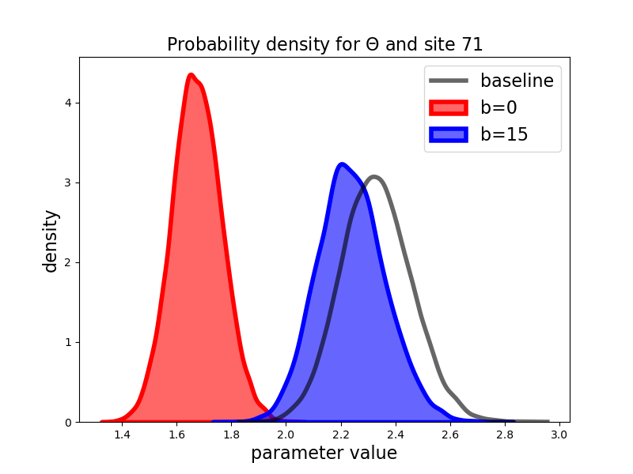
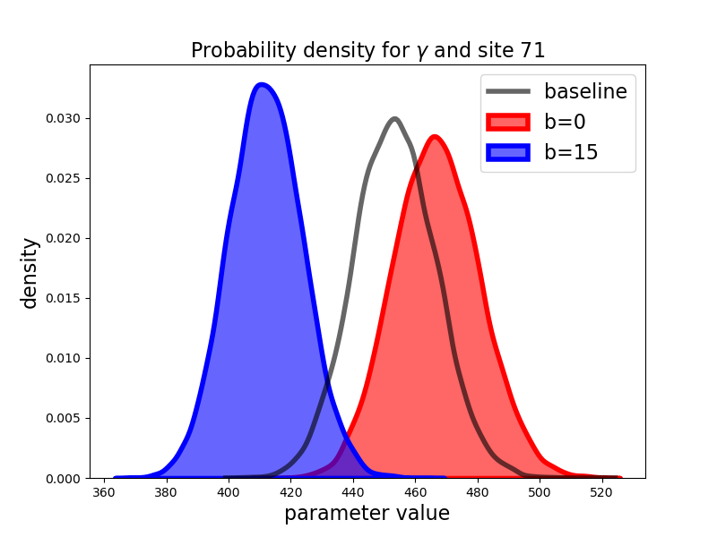
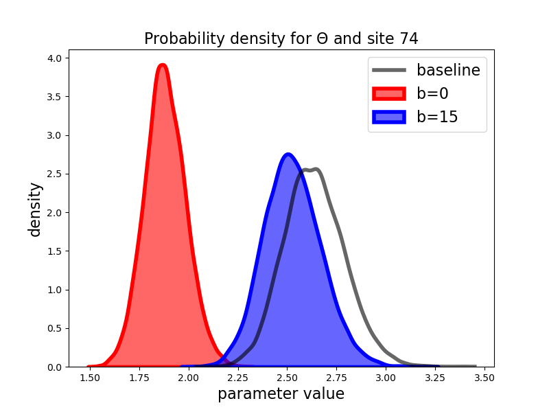
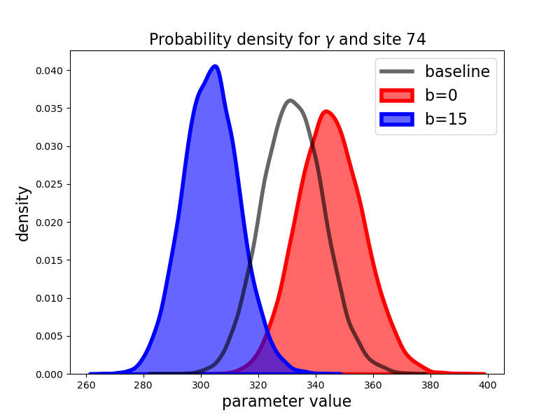
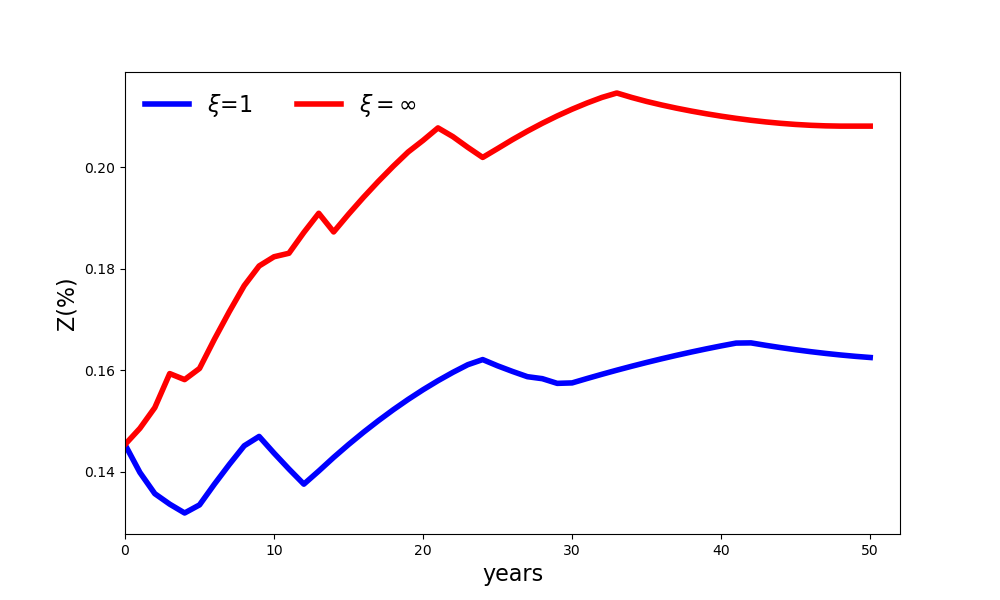

Results with robustness to parameter uncertainty#
In this section, we present results when the planner is uncertain about cattle productivity and CO\(_2\) capture potential. While it is revealing to perform robustness calculations for several values of \(\xi\), here we report results only for \(\xi = \infty\) and \(\xi=1.\) We refer to the former as ‘ambiguity neutral’ and the latter as ‘ambiguity averse.’ We report results for other values of \(\xi\) in the appendix A.11. The implied ambiguity adjustments to the probabilities help us gauge the plausibility of different values of \(\xi.\) The calculated shadow price, as reported in Table Business-as-usual prices, is $7.1/ton under ambiguity neutrality and a considerably lower value of $5.3/ton under ambiguity aversion. The shadow price reduction under ambiguity aversion compensates for the slower destruction of the forests when there is ambiguity in the agricultural productivities for the various sites.
Figure 9 shows the baseline and ambiguity-adjusted distributions for parameters \(\gamma\) and \(\theta\) when \(b=0\) and \(b=15.\) We display results for the two sites with largest divergence between the baseline probability distributions and the ambiguity-adjusted counterparts for sake of illustration.[3] When looking across all sites, the adjustments are very heterogeneous; and for some sites there is very little difference between the two distributions.
Under the business-as-usual benchmark, the adjustments are more pronounced for the \(\theta\) distributions than for the \(\gamma\) distributions. In other words, it is the uncertainty about agricultural productivity that the social planner finds to be most concerning since the planner is not incentivized to preserve the rain forest without transfer payments.[4] The uncertainty adjustment to the probabilities are substantially different when \(b=15.\) Now the adjustments are more pronounced for the \(\gamma\) probability distributions because reforestation becomes a more prominent ambition for the planner.
 
 
Fig 9: Baseline and ambiguity adjusted densities for b = 0 and b = 15
{kind=link}
{kind=link}
{kind=link}
{kind=link}
Some sites are deforested, and some sites are reforested by the planner in the absence of external transfer payments. Figures 10, 12, and 13 show the years in which one of the two controls is maximal for the individual sites. Recall that \(U_t^i > 0\) is when site \(i\) is being deforested, and \(V_t^i>0\) when the site \(i\) is being reforested. Only one of these can be strictly positive at any date \(t\).
Figure 10 compares what happens when \(b=0\) under ambiguity aversion, using the same business-as-usual carbon emission price as we used under ambiguity neutrality. As examples, the two sites featured in Figure 9 are shaded in. For instance, for site 71, the change in land allocation moves from year fifteen to one in which there is no change in land allocation over the time span of 50 years. For site 74 the change is from year three under ambiguity neutrality to year six under ambiguity aversion. The delay is because the planner is particularly skeptical of the baseline distribution for the site-specific agricultural productivity as displayed in Figure 9. More generally, Figure 12 shows how the delays in deforestation and accelerations of reforestation for all of the 78 sites under ambiguity aversion, in the absence of transfer payments. Overall, the ambiguity aversion decreases substantially the land allocated to agriculture as is evident from Figure 11.
{kind=link}
{kind=link}
Fig 10: Spatial allocation comparison for b = 0 for common Pee = $7.1. Green number in a site is the year of maximal rate of reforestation. Red number in a site is the year of maximal deforestation. Sites 71 and 74 are shaded. Ambiguity neutral left, ambiguity averse right.

{kind=link}
Fig 11: Evolution of agricultural area under ambiguity neutrality and ambiguity aversion for \(b=0\) at a common business-as-usual carbon price, \(P^{ee} = 7.1.\)
The previous results hold the business-as-usual price fixed as we introduce ambiguity aversion. As we know from Table Business-as-usual prices, this price decreases endogenously when we impose ambiguity aversion from \(7.1\) to \(5.3.\) Not surprisingly, this has a big impact on both the spatial-dynamic land allocation as we show in Figure 12. While ambiguity aversion still shifts the dates of the maximal responses, it now does so in a much more muted way than in Figure 10.

Fig 12: Spatial allocations for b = 0, Pee = 7.1 for ambiguity neutral and Pee = 5.3 for ambiguity averse, the corresponding shadow prices. The green number in a site is the year in which the rate of reforestation is maximal. The red number in each site is the year in which deforestation is maximal. Sites 71 and 74 are shaded. Ambiguity neutral left, ambiguity averse right.
As shown in Figure 13, when \(b= 15\), there is only reforestation. The dates of maximal reforestation turn out show only limited sensitivity to the ambiguity aversion in this case. For instance, consider site 71, which we featured in the top panel of Figure 9 and is shaded in Figure 13. Under ambiguity neutrality, the planner’s peak reforesting takes place in year five; and under ambiguity aversion, this action is delayed until year seven. For site 74, the maximal response is delayed from year eighteen to year twenty-one. The source of these and other modest delays are due to uncertainty about carbon sequestration productivities.
{kind=link}
Fig 13: Spatial allocation for b = 15, using the corresponding shadow prices. The number in each site is the year in which reforestation in that site is maximal. Ambiguity neutral left, ambiguity averse right.
The left panel of Figure 14 shows a notable contrast with Figure 11. Resetting the business-as-usual price under ambiguity aversion has big impact on the aggregate land allocation dynamics when \(b= \$0\). Consistent with the spatial dynamics reported in Figures 12 and 13, Figure 14 shows that once we adjust the business-as-usual price change, there is only a very modest impact in the aggregate land allocation with and without ambiguity aversion. This holds true for \(b = \$15\) as well.
{kind=link}
{kind=link}
Fig 14: Evolution of agricultural area under ambiguity neutrality and ambiguity aversion, using the corresponding shadow prices.
Finally, we consider the present values under ambiguity aversion (\(\xi = 1\)) in comparison to ambiguity neutrality (\(\xi = \infty)\) in Table Present-value decomposition - parameter ambiguity. As should be expected, the ambiguity aversion induces smaller present values since they are computed with uncertainty adjusted probabilities. The specification of \(b\) determines either a net tax or subsidy depending on its magnitude. Over the range of transfers implied by \(b\)’s in excess of \(\$10\) per ton, the planner’s discounted objective increases and is greater than that for \(b = \$0\) under both ambiguity neutrality and ambiguity aversion. In this range, \(\$b\) functions as a net subsidy, implying that the planner would strictly prefer outcomes under these scenarios to the business-as-usual outcome.
Table Present-value decomposition - parameter ambiguity also reports the discounted present value of agricultural output. For \(b=0\), the drop in the present value contribution of agriculture is over twenty percent. This drop is consistent with the reduction in land allocated to agriculture under ambiguity aversion as reported in Figure 14. In addition, the ambiguity-adjusted probability densities provide a more conservative assessment of agricultural productivity than the baseline densities. For the other choices of \(b\) in Table Present-value decomposition - parameter ambiguity, the contributions are very small but increase under ambiguity aversion. The reason for the increase is that, under ambiguity aversion, the planner makes a more cautious assessment of the ability of the Brazilian rain forest to absorb carbon, leading to a very small increase in the land allocated to agriculture.
Table
agricultural output |
planner value |
|||||
|---|---|---|---|---|---|---|
b |
ambiguity |
ambiguity |
percent |
ambiguity |
ambiguity |
percent |
($) |
neutral |
aversion |
change |
neutral |
aversion |
change |
0 |
3.31 |
2.57 |
-22.4 |
2.14 |
1.64 |
-23.4 |
10 |
0.41 |
0.55 |
33.6 |
2.41 |
2.08 |
-13.9 |
15 |
0.26 |
0.30 |
14.2 |
3.06 |
2.62 |
-14.4 |
20 |
0.20 |
0.23 |
12.9 |
3.75 |
3.19 |
-15.0 |
25 |
0.17 |
0.19 |
11.9 |
4.45 |
3.74 |
-15.8 |
Remark 8
In contrast to land allocation process, \(Z,\) with parameter ambiguity, the state vector process, \(X\), of captured carbon is disguised to the planner, because initial conditions and the dynamics of carbon captured depend on the value of \(\gamma.\) This has ramification for policy since we presume transfer payments are based on carbon reduction. Under ambiguity aversion, our planner uses the ambiguity-adjusted probabilities to compute these payments. In ad hoc policy-making settings distinct from our fictitious planner formulation, one could imagine differences in perspective among providers and recipients of transfers opening the door to explicit consideration of differences in their aversion to uncertainty. Also, parameter uncertainty opens the door to explicit learning that we abstract from here. Rather than being purely passive, this learning could offer the potential for experimentation as a way to gain a better understanding of site-specific productivities.